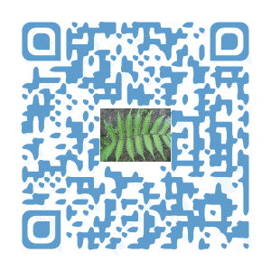
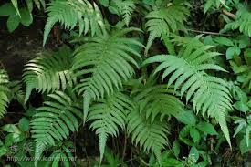
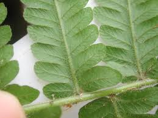
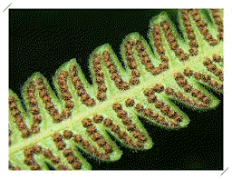

埔墘國小生態園導覽系統
埔墘國小生態園導覽系統
埔墘國小生態園導覽系統
密毛小毛蕨---多子多孫多福氣
科別:金星蕨科

密毛小毛蕨 光聽見這麼多「毛」的字眼
就知道它真的很多毛，這就是它最大的特色，當你用手去觸摸它時，感覺就像是摸絨布表面一樣的舒服。 但它不並屬於龜毛類型的蕨類，而是
相當親近人群 ， 在林蔭下、山坡邊、學校的水溝旁、
公園或居家住宅之中， 都能發現它的蹤影。 他的特徵是二回羽狀裂葉，淡綠色澤的
葉子，羽葉漸漸向尾端縮小，至尾端處有一明顯伸出的
「頂羽片」，像吐著長舌頭一般。
密毛小毛蕨生性偏好高溫而多濕的環境，適合生長的溫度則大約攝氏二十二度至三十度之間，具有耐陰性、耐旱性、耐濕性等，傾向於在蔭蔽而且空氣濕度較高的空間裡發展，在台灣多生長在低海拔山區或平野地區群集而生。
 充電區
充電區
●學名-Christella parasitica (L.) Farw.
●科別-金星蕨科(Thelypteridaceae)
●屬別-毛蕨屬(Christella)
●原產地-台灣，亦分布-熱帶亞洲
●習性-地生 生長在林下空曠處或林緣半遮蔭處環境及居家附近
●莖:金星蕨科(Thelypteridaceae)小毛蕨屬(Christella)的密毛小毛蕨，其根莖一般短而成匍匐狀，其上被有鱗片。
●葉:密毛小毛蕨的葉片通常為叢生，而其葉片呈長卵狀披針形，屬於二回生的羽狀裂葉，一般葉長約在三十至六十公分之間，其葉質近草質，無葉柄構造。
●果實:密毛小毛蕨通常以孢子繁殖，其孢子囊群為圓形，一般位在裂片側脈之上，而孢膜則為圓腎形。
延伸學習與思考：在密毛小毛蕨的葉子表面長有密毛，還好是無毒的、也不刺傷人，你可以放心的撫摸他。但是，有些植物像咬人貓、咬人狗，如果隨意觸摸葉片，可就會有麻痛的感覺，不得不小心啊！
圖片
  
意見回饋
e>
建議使用Google Chrome瀏覽